Somnath Bhatt - 2
Som visited our class last week to present his work to us. I really enjoyed listening to his lecture. I think the use of his heritage and collaboration with other artists in his work is so beautiful. My favorite work he presented was the textile collaboration. Som kicked off his presentation by explaining the idea of fermentation and how objects and flavors change during this process. If I'm not mistaken, he mentioned dahi which is Indian curd. This is made through the process of fermentation, much like yogurt. I think that the idea of taking something that exists and letting it transform overtime is such a cool way of thinking.
I really enjoyed listening to Som speak about his work and his collaboration with other artists. I think it was also really nice to see these collaborations occur over something like Google Hangouts during a pandemic. What was nice to hear was, Som usually works this way anyway. Which is just so fulfilling. I felt like it was a reminder that we can create things even when we are not in our normal environment.
01
actimel.jpeg
OFFER EXPIRES 01/01/1994 02
ssamjang.jpeg
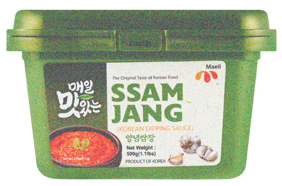OFFER EXPIRES 01/01/1983 03
Pete Halupka
Grape seeds from jar no. 156 provided further corroboration that the jars originally held a grape wine. Additionally, and bearing on the issue of additives to the wine, some jars (not including jar no. 156) yielded a single whole fig, which had been preserved by desiccation. It had been sliced, perhaps to assure greater surface contact for enhancing the wine's sweetness, taste, and other properties and to provide sufficient yeast for starting and sustaining the fermentation.
04
JiL _
Yeasts are eukaryotic, single-celled microorganisms. Through fermentation, yeast can convert sugars into ingredients and materials such as enzymes, flavors, fragrances and complex proteins.
https://vittles.substack.com/p/
vittles-54-fermenting-and-failure
Food is alive, and that life does not stop when we slaughter the animal, drag the fish up to suffocate, or pull the vegetable from the earth.
05
nata de coco.jpeg
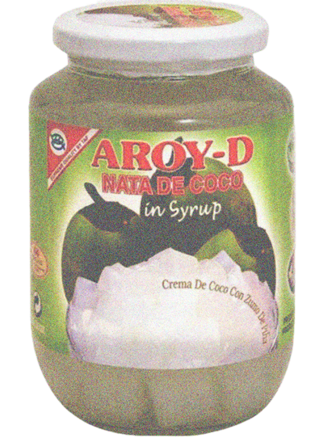OFFER EXPIRES 01/01/1949 06
yakult.jpeg
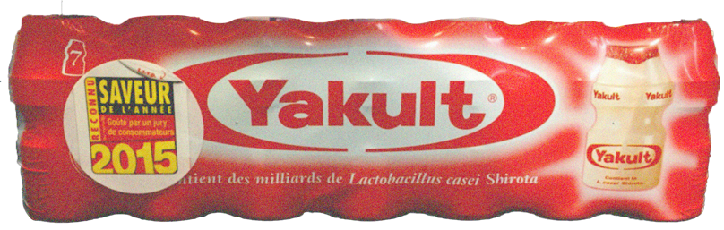OFFER EXPIRES 01/01/1935 07
filmjolk.jpeg
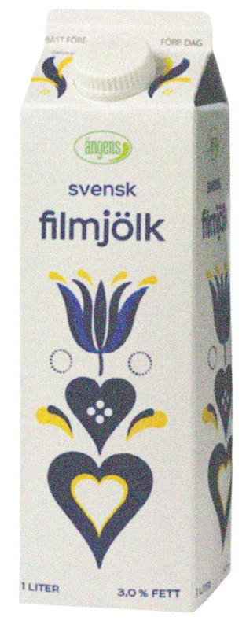OFFER EXPIRES 01/01/1931 08
acidophiline.jpeg
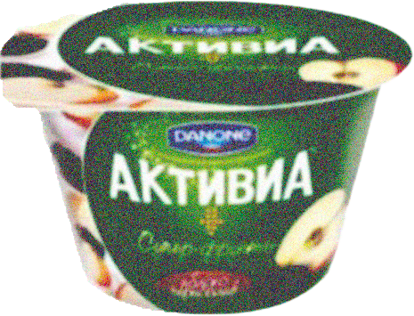OFFER EXPIRES 01/01/1900 09
Hamid_ talks about origins of
"Maast" & "Doug"
While talking about yogurt and kefir strains
with "Hamïd | حمید" from twitter (https://https://twitter.com/hamidr_)
I do have something for you... not sure if it's really helpful.
The term kefir is kinda new to me, as an iranian we call yogurt "maast" (read it like "must", ماست) and there is a fermented beverage from it called "doug"/ دوغ.
In that part of the world which i assume is the origin of yogurt.
But we have lost so much of the culture to wars but there is still some left.
There is another thing we have which plays a big role in iranian cuisine, pickling, specially garlic pickling in apple vinengar.
people love it to their life ... it should be fermented for at least 6month some people keep it as long as they want (years).
https://en.wikipedia.org/wiki/Torshi
https://www.196flavors.com/iran-torshi-seer/
also, about cucumber pickling. we have a different way of picking, it's in salt (+ a small dose of vinegar + spices).
http://www.thepersianpot.com/recipe/khiar-shoor-pickled-cucumber/
10
Proof : The Science of Booze
(9780547898322)
(Rogers, Adam)
| Loc: 1760-1762 |
Thursday, 27 September 2018
22:48:40
Lactone is barely the beginning of what happens to alcoholic liquids stored in barrels. The chemical changes inside a cask—because of wood, air, and time—are every bit as profound as those that take place during fermentation and distillation.
11
Borges, Jorges Luis,
and Adolfo Bioy Casares,
La Martona’s Yogurt 1936,
pp. 19–20.
The Summer Ailment of the Bretons Gross-lait, or gross milk, is the summer food of the Bretons. They add ferment to fresh milk and stir it; at a temperature of seventy- seven degrees Fahrenheit, the curdling is done after twelve hours; they then separate the cream that has accumulated on top and set it apart for consumption. It is a gelatinous milk with a slightly sour taste and the scent of fermented cream. Like kefir, leben has the disadvantage of being prepared with impure ferments.
12
actimel.jpeg
OFFER EXPIRES 01/01/1994 13
ssamjang.jpeg
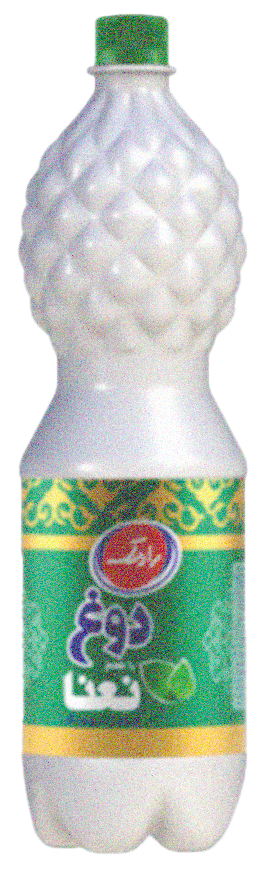OFFER EXPIRES 01/01/1983 14
Michelle Ishikawa
Yamahai:
In the early 1900’s, one brewer discovered that all of this hard work was not necessary: if the brewers just monitored and controlled the temperature, water levels, exposure to air and a few other variables, the lactic bacteria in the yeast starter would naturally produce lactic acid which would fight off unwanted bacteria and yeasts. Yamahai sake still takes roughly four weeks to make and a high degree of control and skill, but it does not require the same manual labor as kimoto. Yamahai sakes are deep, layered and complex but tend to be earthier and smokier than kimotos.
Kimoto:
Ki means “original” and moto is the yeast starter; thus, kimoto means “original yeast starter.” Naturally, it was the original way that sake makers completed this essential step. Started in the 1700’s, the kimoto method requires sake brewers to mush up the yeast starter with bamboo poles for hours on end, day in and day out for roughly four weeks. Mushing the yeast starter tightens the mixture and removes oxygen. As a result, lactic bacteria cannot easily survive and lactic acid is naturally created. Kimoto sake tends to be wild, funky, gamey, layered and rich. Kimotos can also have greater length of flavor.
Gen-shu:
Sake which has not been diluted with water after fermentation. Thus, gen-shu usually has an alcohol content of 20%, whereas most sake is brought down to about 15% to 16%. Gen-shu is generally released and marketed as a special product, but a very small number of brewers make most of their sake as gen-shu without saying it is.
Nama-zake:
Sake which has not been pasteurized. Almost all sake is pasteurized twice to maintain stability. Nama-zake or “live sake” has not been pasteurized and, thus, has a raw, brash personality to it.
Nama-zake is usually released in the spring instead of going through the six-month storage period which lasts until the fall. Nama-zake should always be kept refrigerated and immediately after being released.
Nigori-sake:
Literally meaning “cloudy sake,” is sake with the lees still in the bottle. Sake makers achieve this by running the sake through a coarser filter or by adding the lees back in after filtration. Nigori sake has a creamy mouthfeel and a smooth, easy-going flavor. It should be refrigerated.
15
A Short History of Drunkenness
(Forsyth, Mark)
| Loc: 1712-1714 |
Thursday, 21 June 2018
20:21:52
Mayahuel, who was the goddess of the agave plant, was said to have married Patecatl, who was the god of fermentation. Mayahuel had 400 breasts, which was probably fun for Patecatl, but was also useful because she gave birth to 400 divine little rabbits, the Centzon Totochtin. The reason that there were 400 of them is that the Aztecs counted in base twenty.
Alex Giersz
You can be sure that when you buy our ferments, what you are eating or drinking is part of an important food movement; a return to traditions - to living foods and small batch real food and drinks. We are wild fermenters in a largely homogenised world. We don't water down, force carbonate or add starter cultures. Our choices have never been convenient and by supporting us you are encouraging and supporting an artisan business that puts our customers, our earth, flavours, and the drive toward a better food system first.
"Resistance takes place on many planes. Sometimes it must be dramatic and public, but most of the decisions we are faced with are mundane and private. What to eat is a choice that we make several times a day, if we are lucky. The cumulative choices we make about food have profound implications.
Food offers us many opportunities to resist the culture of mass marketing and commodification.…We do not have to be reduced to the role of consumers selecting from seductive convenience items. We can merge appetite with activism and choose to involve ourselves in food as co-creators". Sandor Katz
16
codliveeroil.jpeg
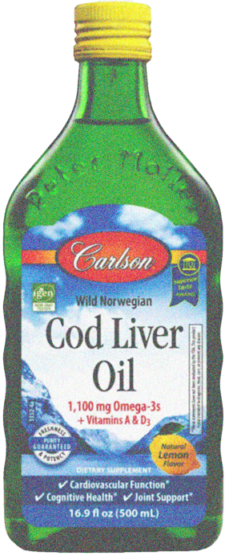OFFER EXPIRES 01/01/1949 17
doubanjiang.jpeg
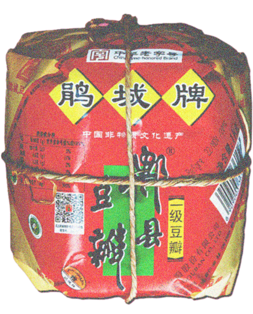OFFER EXPIRES 01/01/1935 18
sourcream.jpeg
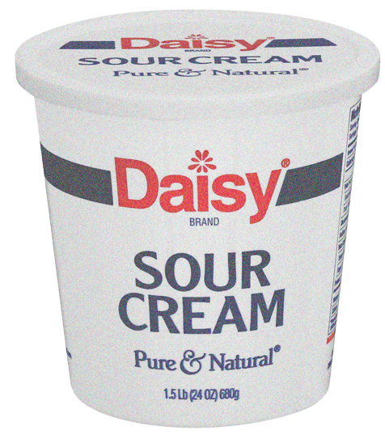OFFER EXPIRES 01/01/1931 19
atchara.jpeg
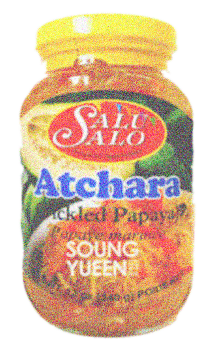OFFER EXPIRES 01/01/1900 20
310
Techniques she could consider are fermentation and developing probiotics, which stand in contrast to the highly closed practice of MG. Kombucha, the ancient art of brewing fermented tea, is a process of using imperceptible bacteria that is specific to its brewing facility. All kombucha is different and is celebrated because it picks up bacteria from the environment where it is brewed, independent of human manipulation - resulting in healthful 'good' bacteria. Such experiments are taking place for many reasons other than the tantalising of human senses: alternative sources of protein, ecology, ethics and probiotics.
21
CULTURED FOODS
culture the cultivation of bacteria, tissue cells, etc. in an artificial medium containing nutrients.
cultural aspects of fermentation, in a scientific-biological aspect and on a social level
22
Torshi /Tursu
Iran/Turkey/Morrocco/Middle East
Source: Baha’i Views / Flitzy Phoebie
Vegetables are fermented in brine that also contains aromatic herbs, spices and vinegar. The ingredients include celery, carrots, cauliflower, bell peppers, cabbage, aubergines and green tomatoes. This is then paced in glass jars and stored in a cool place for 2-3 months.
23
What Exactly Is a Pét-Nat?
Compared to Champagne and other sparkling wines, Brandt says pét-nat is unpredictable. “We have no control once it’s in the bottle, so every bottle will be a little different,” he says. When a pét-nat is first released, he says it may still be a tad sweet—the result of some residual sugar that hasn’t yet undergone fermentation. “It tends to get drier [as time passes], and to speed that up you can put a bottle in a sunny window for a few days.” (The sunlight helps encourage the in-bottle fermentation.) He also says that a pét-nat’s bubbles often become softer and smaller as it ages. But pét-nats aren’t meant for long cellaring. “I generally suggest that people drink them within three months of buying,” he says.
24
kapusta.jpeg
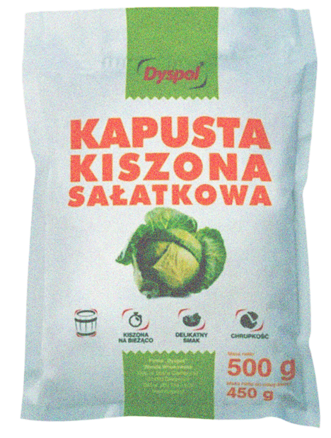OFFER EXPIRES 01/01/1500 25
surstromming.jpeg
OFFER EXPIRES 01/01/1500 26
Proof : The Science of Booze
(9780547898322)
(Rogers, Adam)
| Loc: 579-580 |
Tuesday, 25 September 2018
23:18:44
Koji is at the core of Japanese cuisine—it’s the key to sake, soy sauce, miso (the fermented soy paste used as a basis for soup), vinegar, and tofu. Technically, it’s the fungus Aspergillus oryzae,
27
https://solar.lowtechmagazine.com
/2018/07/fermentation-and-daily-life.html
"Part of the conceit of modernity is that, to solve our problems, we need more high-tech solutions. But many of our problems are caused by technology in the first place—consider nuclear weapons, air pollution, climate change, and industrial food waste"
28
Gabriela Serpa
After I immigrated to Australia in the ’90s, my white friends mocked these ferments as “smelly,” “gross,” and “weird.” But 20 years later, the large refrigerated probiotic beverage section at Whole Foods was dominated by a funky drink, covered with psychedelic labels and buzzwords like “rejuvenate,” “restore,” and “regenerate.” And just as I’ve seen the popularity of kombucha continue to grow, I’ve watched as many of the once-ridiculed ferments of my childhood have been declared not just acceptable, but trendy by white people eager to festishize and commoditize them.
29
주 별
What needs to be pickled or to be reconsumed? The process of fermentation alters and modifies food to be preserved and eaten
30
brem.jpeg
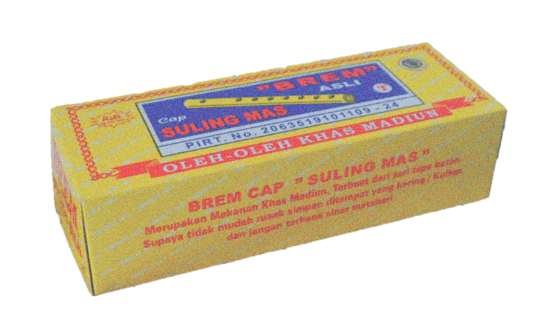OFFER EXPIRES 01/01/1000CE 31
Vittles 5.4 -
Fermenting and Failure
It is natural, in our increasingly sterilised world, to be scared of decay, a fear which I don’t think the bizarre labelling of some microbes as ‘good’ and the rest as ‘bad’ does anything to assuage. Even when we accept fermentation as a kind of controlled rot it is easy to see anything outside this control as being dangerous.
32
Karen Windey
Considering the whole of available evidence, it is without doubt that protein fermentation yields intrinsically toxic luminal compounds that affect epithelial cell metabolism and barrier function. However, the effects of long‐term exposure of the colonic mucosa to those metabolites remain unclear. Available evidence at present seems insufficient to support a role of protein fermentation in the risk of bowel diseases. It is possible that the impact of protein fermentation is overshadowed by other dietary or lifestyle factors. The relative importance of the different factors contributing to increased CRC risk needs to be further addressed.
What Exactly Is a Pét-Nat?
Rather than blending different dry wines and putting them through a second round of fermentation and aging, pét-nat is bottled while still undergoing its first round of fermentation. The French call this process “methode ancestral,” and it’s likely been around far longer than other, more complex methods of producing sparkling wine.
33
amasi.jpeg
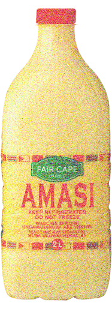OFFER EXPIRES 01/01/1000CE 34
idli.jpeg
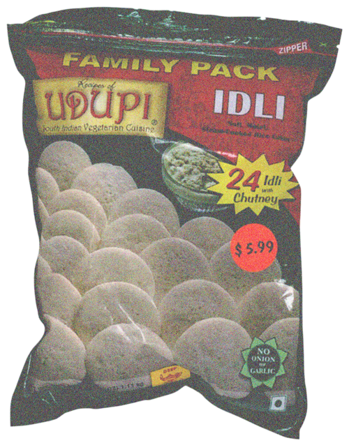OFFER EXPIRES 01/01/800CE 35
natto.jpeg
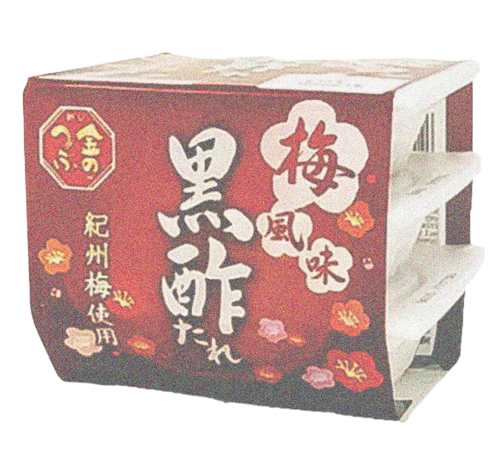OFFER EXPIRES 01/01/600CE 36
fermentedbeancurd.jpeg
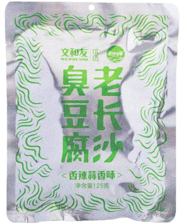
OFFER EXPIRES 01/01/500CE 37
Bread Sequence:
Knead - Fold - Mix
Ferment
Shape
Proof - Bench
Bake
Bread
38
Tushar Hathiramani
in life, time is not even a constant. fermentation is.
39
Fred Mora
Underground fermentation fridge and storage, viewed from other level.
40
Seetal Solanki
there is no time, there is fermentation.
41
kapusta.jpeg
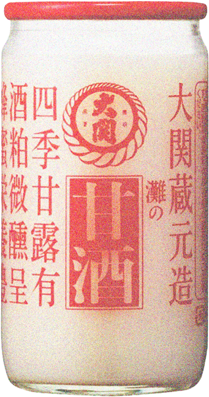OFFER EXPIRES 01/01/1500 42
surstromming.jpeg
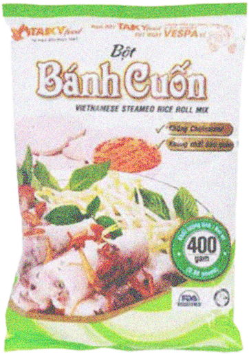OFFER EXPIRES 01/01/1500 43
kapusta.jpeg
OFFER EXPIRES 01/01/1500 42
surstromming.jpeg
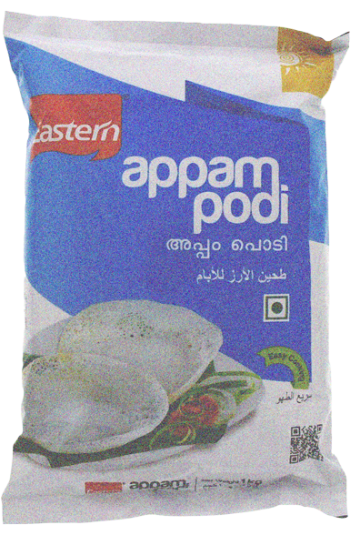OFFER EXPIRES 01/01/1500 43
G D
FERMENTATION: Eau et 2% du poids en sel.
44
¥ Pog
Single Fermented Belgian Golden Ale (Duvel)
45
Fermented Honey Garlic
1. Peel garlic cloves
2. Fill jar 3/4 with cloves
3. Pour raw honey to cover
4. Close lid loosely
5. Store in dark place
6. Shake every few days for one month
7. Consume for immunity
46